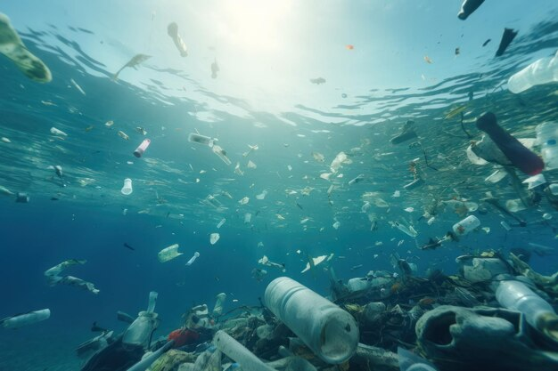

A SosMares é uma organização dedicada à preservação dos oceanos e à promoção de um meio ambiente mais limpo e saudável. Fundada por um grupo de
entusiastas do mar e ambientalistas comprometidos, nossa missão é combater a poluição marinha através de iniciativas sustentáveis e campanhas
de conscientização. Com o aumento alarmante de resíduos nos mares, estamos determinados a mobilizar comunidades, educar a população e implementar
ações práticas para reduzir o impacto dos resíduos sólidos.
Nossos projetos incluem expedições de limpeza dos oceanos, programas de educação ambiental em escolas e comunidades,
e parcerias com empresas e governos para promover políticas de sustentabilidade. Acreditamos que a proteção dos oceanos
é uma responsabilidade compartilhada e trabalhamos incansavelmente para engajar pessoas de todas as idades e origens em
nossa causa. Junte-se a nós nesta jornada para garantir um futuro mais limpo e saudável para nossos mares e para as gerações futuras.
Algumas informações
Projeto de limpeza
Operação de limpeza tira 103 toneladas de plástico do mar,viagem durou 3 dias, foi realizado pela ONG Ocean Voyages Institute

Plástico nos oceanos
Segundo um estudo do Blue Keepers, projeto ligado ao Pacto Global da Organização das Nações Unidas (ONU), o Brasil é responsável por 3,44 milhões de toneladas
de plástico que chegam aos oceanos todos os anos.
Mortes de animais
há 100 mil animais marinhos que morrem anualmente devido à ingestão de plástico.